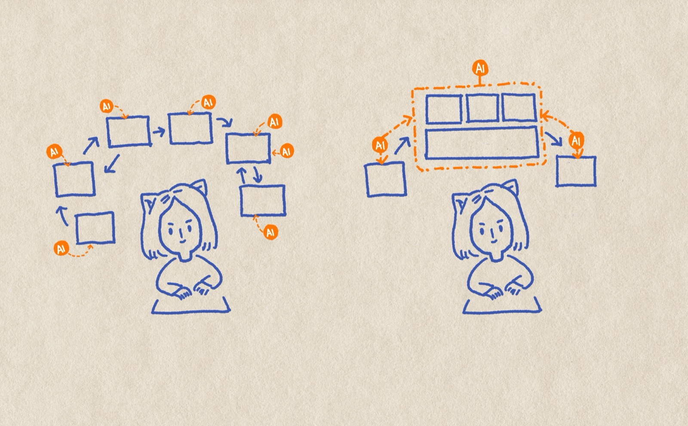
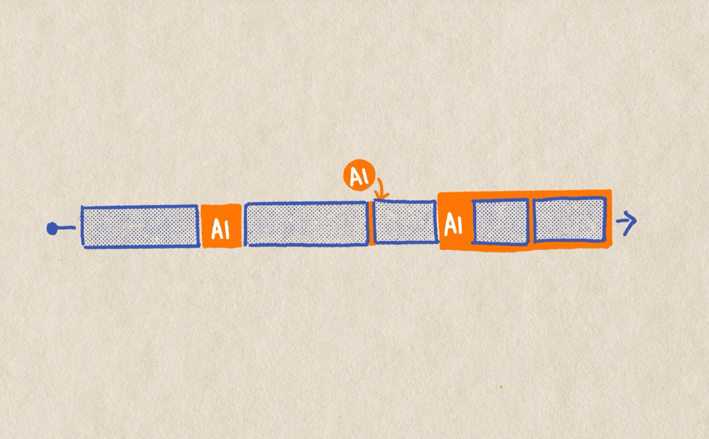
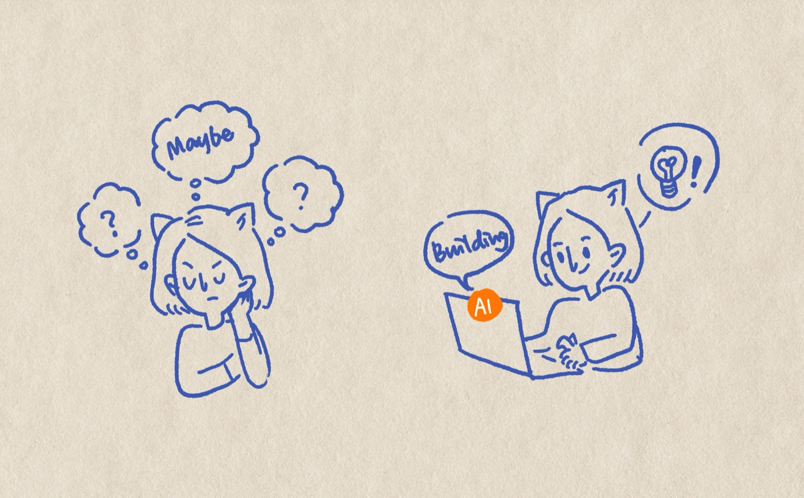
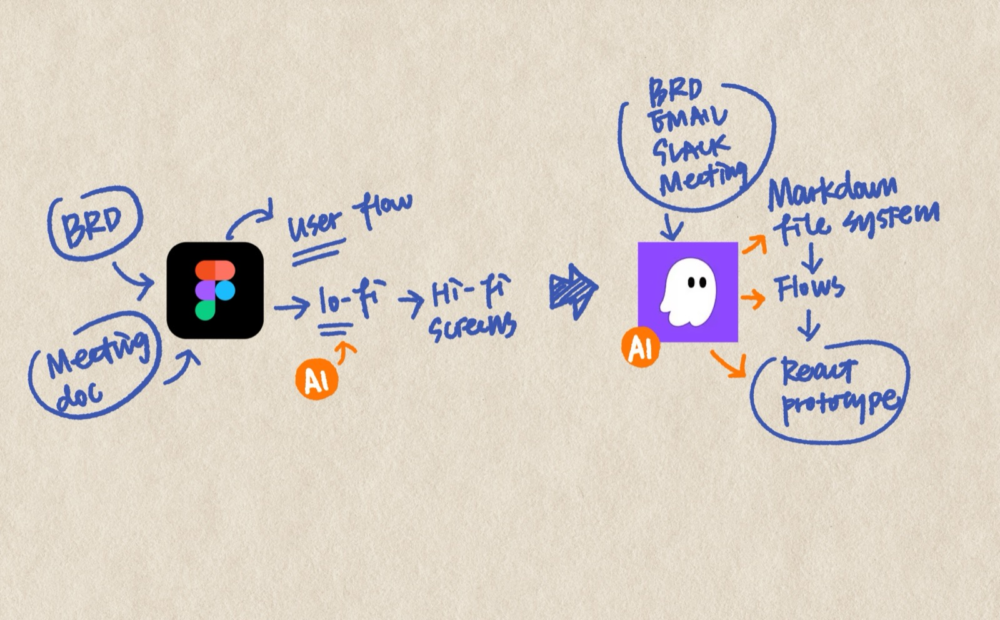

Transforming How a Design Team Works with AI
In August 2025, I started incorporating AI into my design work — beginning with Amazon Q and the Amazon Quick Suite, which gave us access to internal context and the ability to build project- and team-specific knowledge bases.
As my understanding deepened and matured, I force-multiplied my practice. By March 2026, I wasn't just optimizing my own workflow — I was sharing what I'd learned, designing programs, and building tools to help the whole team grow together. The team isn't fully AI-native yet, but I'm actively experimenting and scaling. Because I'd rather move further with the team than just fast on my own.

I started with Quick Suite to summarize PRDs and long documents, which cut down reading time. I used Cline in VS Code and Kiro to create early concepts for testing and stakeholder communication. I built a knowledge base I could query when I had questions about my projects.
Useful — but as someone who's always optimizing how I work, I noticed three gaps:
First, my real pain point was never reading speed — it was the challenge of documenting my scattered thoughts while reading. Summarization helped me consume faster, but didn't help me think better.
Second, using AI ad hoc meant bolting it onto a workflow that wasn't designed for it. What if I rebuilt the system from scratch with AI as an integrated partner — streamlining steps that had always been separate?
Third, nothing I produced in those early experiments built on itself. Artifacts couldn't be reused across stages, or they got buried. There was no persistent context foundation I could carry through every step of my process.
So I built a markdown-based system that turns scattered inputs — meeting notes, BRDs, stakeholder conversations — into organized, traceable design rationale. Thoughts start messy and graduate into structured decisions. AI acts as thinking partner, meeting companion, and document maintainer across the whole system. Plain markdown, fully portable, no special tooling — a persistent context pool that compounds over time instead of starting from zero every session.
I'm always observing gaps in my team's process and proactively building tools or running experiments to fill them — without waiting for a mandate or roadmap.
Other teams within our org had Meridian MCP support for AI prototyping, but the Transporter team using Rabbit Design System had nothing — they weren't using AI in their prototyping process at all. To unblock them, I used Kiro to build a custom Rabbit DS MCP server, enabling the team to prototype with the right components and tokens for the first time. I also experimented with Agent2Figma for recreating pages in Figma from screenshots, and distilled the learnings into guidance docs teammates can feed directly to their AI tools. MiniPath is the more ambitious bet — a tool I'm building to help designers create high-quality prototypes with the least possible learning curve.

The existing AI program in our studio was heavy on tool sharing and article roundups but light on engagement — and AI tools need hands-on experience to truly embed into a workflow, especially when everyone works differently. Knowing this gap, I partnered with another UXD to propose an AI maturity assessment framework to our director, mapping where the team stood and why. From there, we proposed three programs designed to accelerate adoption: AI Buddy (peer pairing for hands-on learning), AI "Book Club" (shared experimentation sessions), and a Hackathon to push the team's comfort zone.
Embracing AI has changed my mindset. Now when I face an unfamiliar problem or wonder whether something is possible, instead of asking around and stopping when people say it can't be done — I test it myself. When a teammate asked whether they could vibe-code a prototype for accessibility testing, I quickly ran an experiment in Kiro and proved it was possible. That unlocked the team to test a flow with users who have hearing impairments — something that wouldn't have happened if we'd taken "impossible" as the answer.

I worked with my engineering team to experiment with a new design-to-dev handoff. My latest design handoff was a vibe-coded React prototype using components from our actual design system. Not a static spec — a working, interactive artifact that engineers could inspect and build from.
